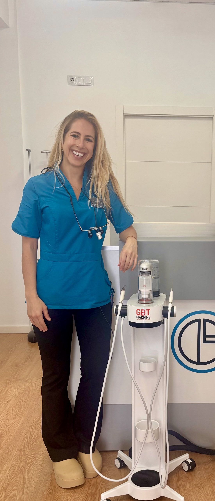
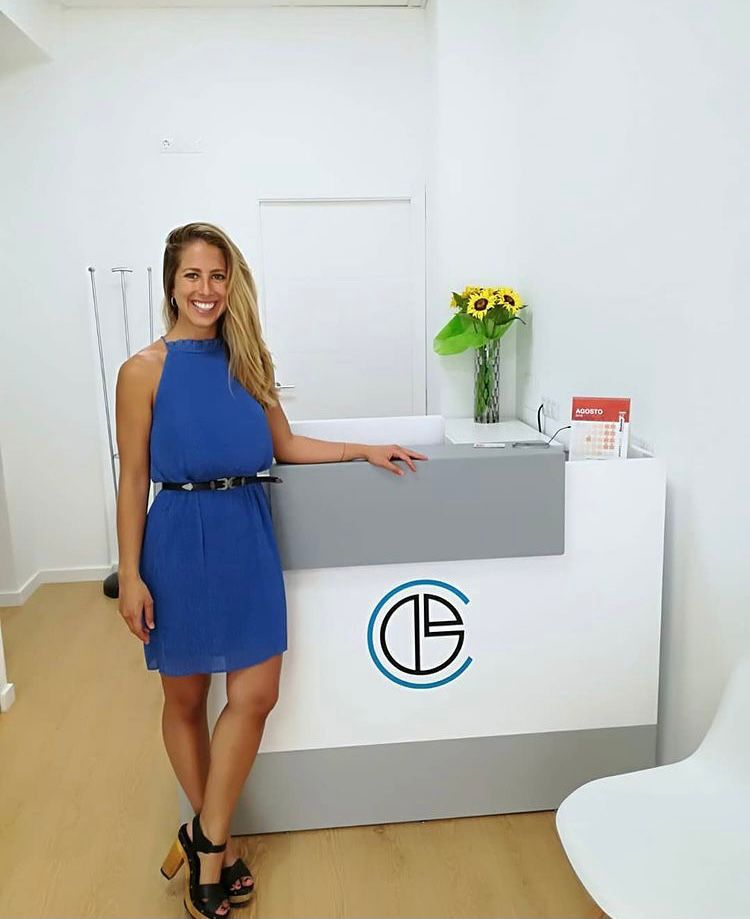
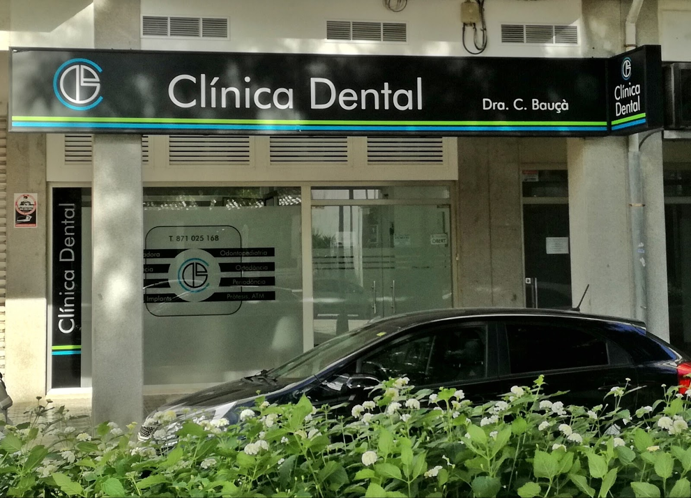

Anar al dentista pot ser un dia tranquil.
Odontologia a Inca, amb temps per explicar-t'ho tot abans de començar.
4,8 sobre 5 a Google, amb 68 ressenyes.
La por al dentista és el motiu més comú per no venir-hi. Ho sabem, i per això anam a poc a poc.
Sin duda mi clínica dental de confianza. Superados mis miedos gracias a todo el personal.Ressenya de Google
Tractaments


T'ho ensenyam abans de tocar res.
Feim un escàner 3D de la teva boca i el miram junts a la pantalla. Veus exactament el mateix que veim nosaltres, i d'aquí surten el pla de tractament i el pressupost.
«Te atienden amablemente, te enseñan, corrigen y gracias a ello mejoras mucho» — Ressenya de Google
Qui t'atén



La doctora et visita i t'explica el pla; l'equip t'acompanya la resta del camí.
Com reconèixer la clínica


Som a la Gran Via de Colom, 15, en un local de planta baixa sota els porxos. És fàcil passar-hi de llarg: cerca el rètol negre amb la franja verda i blava.
Av. Gran Via de Colom, 15, local 6 · 07300 Inca
Demana hora
10.00–14.00 i 16.00–20.00 [CONFIRM: horari partit o seguit] · [CONFIRM: correu electrònic]